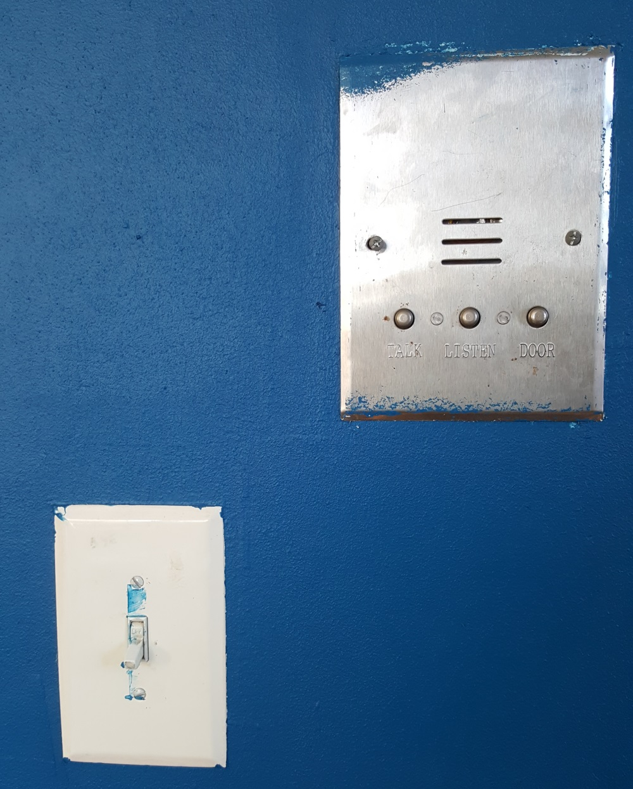
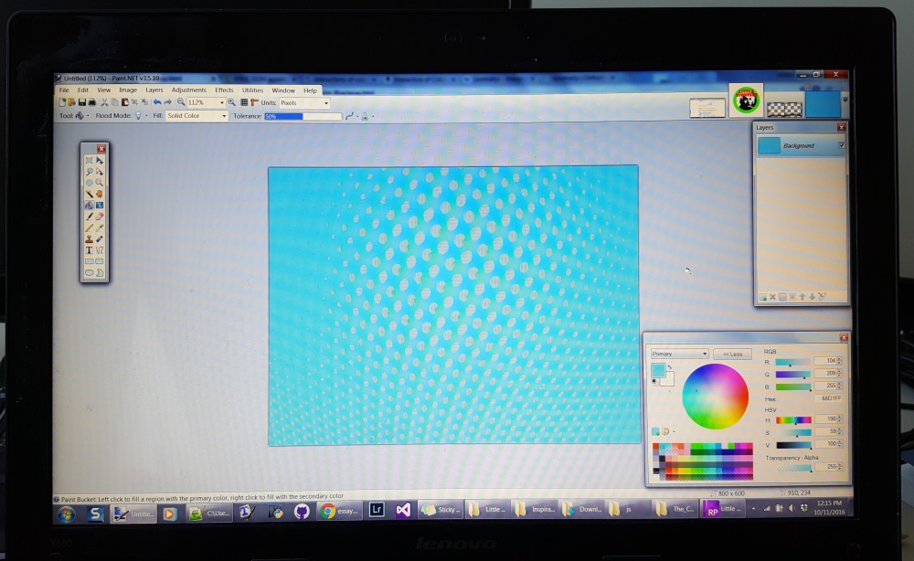

Introduction
This is a visual essay about isolating ideas from each other.
It discusses the communication of seemingly obvious abstract concepts,
geometry, and how we can use these ideas in teaching and the journey torwards awareness.
What is a trivial idea?
Have you ever thought that there are some abstract ideas are so "simple" or "obvious" that
you could indicate their essential character through referential actions such as pointing them out in the real world?
The ideas that come to my mind are things like colors and numbers. So long have I been aware of their existence and used them in my day to day life that it is sometimes hard to imagine not knowing about them.
Although they may be comfortable, with colors perhaps being more appealing than numbers to some thinkers,
I wonder how they can be communicated to people who truly do not yet know them.
We start by considering a color education narrative.
Hypothetical Story Time
Lets say their was a woman named Jill who had a son named Rick.
Rick had been living empirically within reality, but had not yet discerned that the electromagnetic radiation waves
visible in our environment affected our photoreceptors in an organized manner, irrespective of their use in helping us
to differentiate between objects.
Now, being a good person Jill tries to explain what a color is empirically by pointing out the concept in her local environment.
She starts by pointing to a blue wall in her home.

Blue wall found in the wild.
When she points to that wall as an example of
blue,
here are some Rick's possible misinterpretations:
- Blue means wall.
- Blue means light switch.
- Blue means white.
- Blue means intercom.
- Blue means 2
- Blue means illuminated surface.
- Blue means this a particular shade of dark blue.
- Blue means rectangle.
- Blue means diagonal spacing.
"Ok" Jill thinks. She decides that she wasn't specific enough in her referencing.
The then leads Rick closer to the wall and points out a specific unadorned patch of bone fide blue painted wall.
"Ok" Jill thinks. She decides that she wasn't specific enough in her referencing,
so she then leads Rick closer to the wall and points out a specific unadorned patch of bone fide blue painted wall.

Computer Screen Displaying a monochromatic image of the color blue.
In Josef Alber's book
Interaction of Color
explains how humans don't ever see any 1 color in isolation, but rather our perception of a color is a function
of its relationship to its environment.
Plato would probably agree, believing that much like triangles, we've never actually seen colors out in the wild, rather we have only seen representations of them.
Merriam-Webster defines Geometry as, "a : a branch of mathematics that deals with the measurement, properties, and relationships of points, lines, angles, surfaces, and solids; broadly : the study of properties of given elements that
remain invariant under specified transformations"